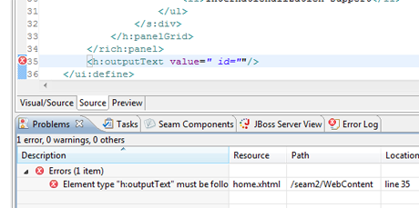
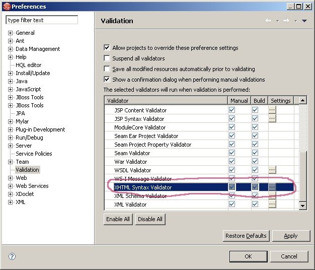
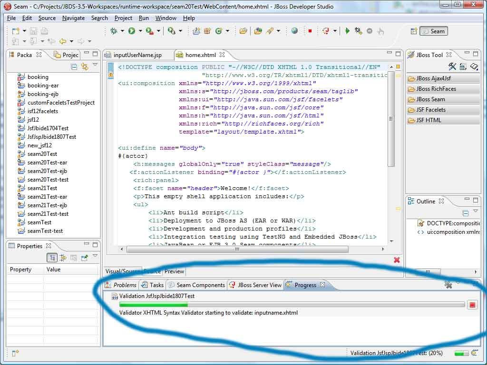

< Main Index Smooks Tools News >
OpenOn |
|
|
Tag Libs |
OpenOn's are now available for source elements. |
|
Portlet |
OpenOn's are now available for portlet-class and resource-bundle in portlet.xml |
General |
|
|
Drag'n'Drop in Outline |
Drag'n'Drop in outline of .xhtml and .jsf now works. |
|
XHTML Validation |
We now utilizes WTP's XML validator for validation of xhtml files. This should ensure errors like missing end tags that uses name spaces gets detected.  It can be enabled/disabled in the normal Validation preferences  When running the Progress view shows the details and provide a Cancel button to stop the validation early.  |